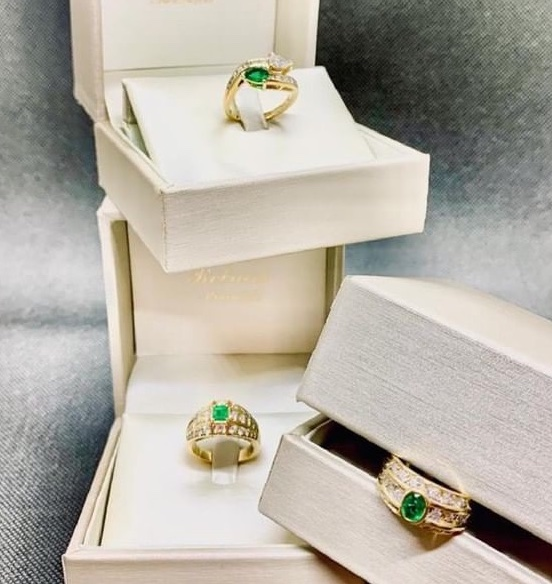
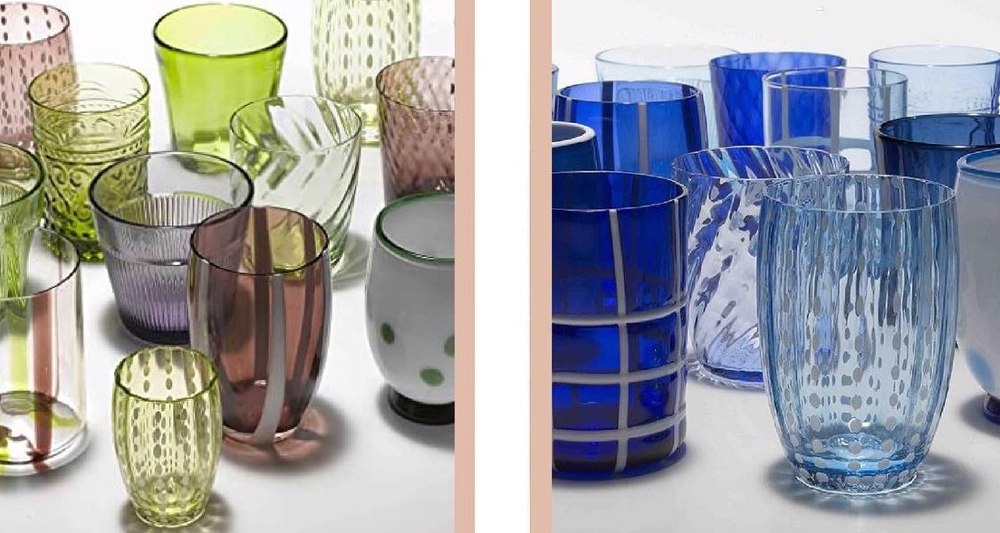

Rebucci / La Gioielleria
Un negozio che non ha mai cambiato indirizzo.
Dal 1963 in via Cesare Battisti, nel centro storico di Mirandola: gioielleria e oggettistica scelte con lo stesso metro.
Dal 1963
Sessant’anni sulla stessa strada.
La gioielleria apre nei primi anni Sessanta, quando via Cesare Battisti è già la strada dei negozi storici di Mirandola. Da allora la vetrina ha cambiato mille volte contenuto e mai posizione.
Il terremoto del 2012 ha rimesso in discussione tutto il centro. Il negozio ha riaperto dov’era, e da allora ospita anche gli autori di vetro e ceramica che frequentano la città.

Chi sceglie i pezzi
Alessandra Rebucci.
Ogni collezione entra in negozio dopo essere passata dalle sue mani: prova le montature, pesa le catene, discute con gli orafi. La selezione è personale, e si vede.
Su appuntamento segue anche i progetti su misura: un disegno, una pietra di famiglia da rimontare, un anniversario.

Il negozio
Poche cose per volta, ben illuminate.
Due sale: la prima con i preziosi, la seconda con vetri, ceramiche e complementi. Non c’è un catalogo fisso, perché la metà dei pezzi è unica.
